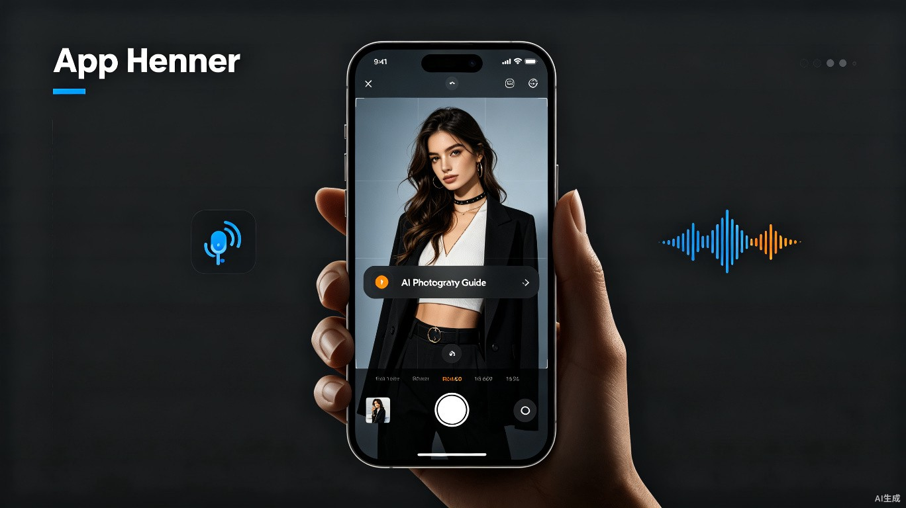
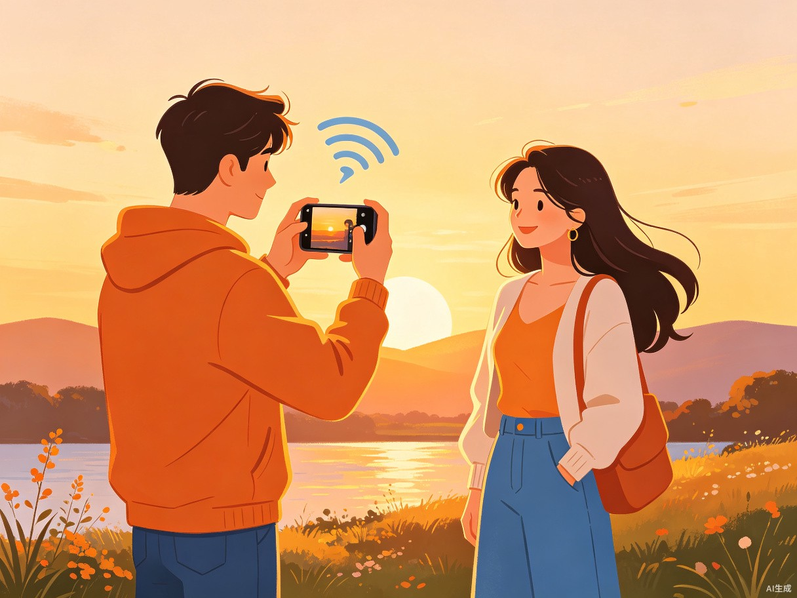

拍照
Master
内置在手机相机里的AI语音摄影兄弟。
不懂构图？不会调参？被女朋友嫌弃拍照丑？
打开相机，你的专属摄影教练已就位。

01直男拍照之痛
这不是一个小众问题。每一个不懂拍照的男生背后，都有一个翻着白眼的女朋友。 我们用手机记录生活的时刻越来越多，但摄影的门槛依然横在大多数人面前。
"往左一点...不对是你的左边"
女朋友在镜头前摆了十分钟pose，你拍出来的不是双下巴就是一米五，构图全靠缘分，表情全靠瞎蒙。
毕业照/旅行照翻车现场
人生重要时刻掏出手机，却发现自己连三分构图法都不知道，过后看着废片追悔莫及，美好瞬间无法重来。
专业模式看了就头大
ISO、白平衡、快门速度、曝光补偿...这些参数每个字都认识，组合在一起就是天书。自动模式拍出来又总差点意思。
修图App越用越焦虑
拍完还要套滤镜、调光影、拉对比度，几十个滤镜试过来，最后还是觉得原图最顺眼，因为根本不知道该调哪里。
"你根本不爱我"
把女朋友拍丑了是态度问题，不是技术问题。你辩解"你本来就长这样"的时候，就是今晚睡沙发的开始。
求人帮忙拍照的尴尬
路人的拍照水平比你还不稳定，指导别人怎么拍比自己拍还难，集体照永远找不到一个靠谱的摄影师。
02什么是拍照Master
拍照Master不是一个App，而是内置在系统相机里的AI语音摄影助手。 它像你身边那个会拍照的兄弟，用你听得懂的话，实时教你拍出好照片。

你的专属摄影兄弟
打开相机，它就开始工作了。不需要切换模式，不需要学习操作， 它通过实时画面分析 + 自然语音对话， 像真人摄影师一样指导你。
它不说"请将主体置于三分线交点"，它说"兄弟，手机往右挪一点点，对，女朋友的脸放在屏幕左上方那个交叉点，完美。"
三大核心理念
主动而非被动
它不等你问，会主动发现问题。看到光线不对会提醒你，构图歪了会纠正你，检测到是人像场景会主动调出人像参数方案。
说人话不说术语
把摄影知识翻译成大白话。不说"逆光补偿"，说"现在太阳在背后，我帮你把人脸调亮点"；不说"浅景深"，说"我帮你把背景虚化成那种高级感"。
给方案也给决策权
它不替你按快门，但会准备好方案。"我建议用这个暖色调滤镜拍日落，你觉得OK吗？"你说好，它直接帮你调好参数。
03核心功能
从打开相机的那一刻起，拍照Master就开始全程陪伴，覆盖拍照前、拍照中、拍照后的完整体验。
🎯 实时构图引导
分析画面中的人物、风景、建筑等主体，实时语音指导机位调整："手机抬高点，地平线歪了"、"人太靠边了，往中间来一点"、"往后退半步，把塔拍全"。配合屏幕上的动态引导线，对齐后会告诉你"完美，稳住，可以按了"。
💬 自然语音对话
你可以直接跟它说话："我想拍那种大长腿的感觉"、"背景能不能虚掉"、"帮我把她拍白一点"。它会理解你的意图，给出调整方案，并语音反馈进度。双手被占用时也能操作，拍照不用低头看屏幕。
☀️ 光影与参数调节
自动检测光线条件，主动建议参数组合。"现在是黄金小时，我帮你调个暖色调"、"这里有点逆光，我开HDR，你稳住"。滤镜、曝光、对比度、白平衡等参数，它给出方案，你说OK它直接应用。
🧠 场景智能识别
自动识别当前场景：人像、风景、美食、夜景、运动、宠物、合影...并加载对应的拍摄策略。拍女朋友自动启用美颜+人像虚化，拍风景自动启用广角+HDR，拍美食自动增强色彩饱和度。
📸 姿势与表情指导
不仅指导你怎么拍，还指导被拍的人怎么摆。"让女朋友把头发撩到耳后，头稍微歪一点"、"笑一下，别那么严肃"、"腿往前伸，显长"。终结"你怎么摆都别扭"的尴尬。
✅ 出片质检与补救
拍完立即评估："这张闭眼了，再来一张"、"手晃了，稳住再拍一次"、"这张不错，但再拍一张侧脸的备选"。从源头减少废片，不用回家才发现拍糊了。还能一键生成"这次拍得不错"的夸夸语音，直接发给女朋友。
04对话体验演示
这是一个典型的"给女朋友拍照"场景。打开相机，拍照Master自动启动，全程语音陪伴。
05典型使用场景
拍照Master为这些"关键时刻"而生。
情侣出行/约会
旅行、探店、逛公园，女朋友说"帮我拍张照"的时候不再手心冒汗。拍照Master手把手教你找角度、调参数，出片率直接拉满，再也不用因为拍照吵架。
毕业照/纪念日等重要时刻
人生中那些不能重来的瞬间——毕业典礼、领证、生日聚会、家庭合影。拍照Master确保你不会因为手残而留下遗憾，每一张都值得打印出来挂墙上。
美食/探店打卡
旅行风景/打卡照
到了景点不知道怎么拍？拍照Master识别地标建筑，告诉你最佳拍摄位置和参数，帮你拍出"朋友圈摄影大赛"级别的旅行大片。
夜景/暗光环境
晚上拍照是大多数人的噩梦——糊、暗、噪点多。拍照Master自动启用夜景模式，指导你稳住手机（或找个支撑），帮你拍出清晰明亮的夜景照片。
宠物/运动抓拍
毛孩子不配合？拍照Master自动追踪运动主体，启用连拍模式，帮你抓住宠物最可爱的那个瞬间。
06竞品对比
市场上已有一些摄影辅助工具，但它们大多停留在"被动提示"阶段。拍照Master是第一个真正"懂你、主动教你、帮你调"的对话式AI摄影助手。
| 功能维度 | 普通相机自动模式 | 荣耀YOYO灵感帮拍[2] | 有爱相机[3] | WayShot[4] | 拍照Master |
|---|---|---|---|---|---|
| 交互方式 | 无引导 | 屏幕文字提示 | 动画+文字提示 | 屏幕+语音提示 | 主动语音对话 |
| 构图引导 | ✗ | △ 辅助线 | △ 动画指导 | ✓ | ✓ 实时语音+动态线 |
| 自然语言理解 | ✗ | ✗ | ✗ | △ 有限指令 | ✓ 自由对话 |
| 主动发起建议 | ✗ | △ 构图提示 | ✗ | △ 有限提示 | ✓ 全程主动陪伴 |
| 参数自动调节 | △ 全自动 | ✗ 仅提示 | ✗ 仅提示 | △ 部分调节 | ✓ 方案+一键应用 |
| 姿势/表情指导 | ✗ | ✗ | △ 简单提示 | ✓ | ✓ 双向指导 |
| 人格化语气 | ✗ | ✗ 机械提示 | △ 夸夸语音 | ✗ | ✓ 兄弟式对话 |
| 系统级内置 | ✓ | ✓ 荣耀系统 | ✗ 独立App | ✗ 独立App | ✓ 系统相机内置 |
| 拍后质检 | ✗ | ✗ | ✗ | ✗ | ✓ 实时评估 |
核心差异化
现有产品都是"工具思维"——给你看辅助线、给你看提示文字，你自己看着办。 拍照Master是"教练思维"——它像一个真人站在你旁边，全程跟你说话， 告诉你哪里不对、该怎么调、调完是什么效果，甚至帮你动手调。 而且它懂男生的语境，不说教、不啰嗦，用你跟兄弟说话的方式沟通。
07技术架构
拍照Master建立在多模态AI能力栈之上，实现端到端的实时摄影辅助。
flowchart TD
A[摄像头实时画面] --> B[视觉理解引擎]
C[用户语音输入] --> D[语音识别+语义理解]
B --> E[场景分析模块]
B --> F[构图评估模块]
B --> G[主体追踪模块]
B --> H[光线分析模块]
D --> I[意图理解模块]
E & F & G & H & I --> J[AI决策大脑]
J --> K[语音合成输出]
J --> L[参数调节指令]
J --> M[屏幕引导层渲染]
L --> N[相机HAL层]
K --> O[扬声器/耳机]
M --> P[屏幕Overlay]
style J fill:#f97316,stroke:#f97316,color:#fff
style A fill:#3b82f6,stroke:#3b82f6,color:#fff
style C fill:#3b82f6,stroke:#3b82f6,color:#fff
style K fill:#10b981,stroke:#10b981,color:#fff
style L fill:#10b981,stroke:#10b981,color:#fff
style M fill:#10b981,stroke:#10b981,color:#fff
AI能力栈
实时视觉理解
多目标检测、语义分割、场景分类、构图质量评估，端侧推理延迟<50ms
语音交互
ASR语音识别 + 多轮对话管理 + TTS语音合成，支持自然口语指令
摄影知识图谱
内置十万级优质样张数据库，覆盖人像/风景/美食等场景的专业构图规则
相机参数控制
系统级API对接ISO/快门/白平衡/对焦/HDR/滤镜等20+项参数的实时调节
端侧AI推理
核心模型轻量化部署在NPU上，无需联网，保护隐私，低功耗运行
人格化对话引擎
针对目标用户群体训练的"兄弟语气"对话模型，自然不机械
08产品路线图
从MVP到生态，拍照Master的演进路径。
核心功能验证
人像场景实时构图引导 + 基础语音对话 + 核心参数自动调节。覆盖"给女朋友拍照"这个最高频痛点场景，验证核心交互体验。
场景扩展
加入风景、美食、夜景、合影等更多场景；增加姿势指导、表情识别、拍后质检功能；优化对话自然度，支持更多口语化表达。
系统级集成
与手机厂商深度合作，作为系统相机内置功能预装；支持视频录制引导；加入AI修图建议；建立用户拍摄风格学习模型。
平台化与社区
开放"摄影教练"训练平台，允许专业摄影师上传自己的拍摄风格模型；支持用户之间分享"拍摄配方"；接入第三方滤镜和修图App。
让每个人都能
拍出好照片
摄影不应该是少数人的技能。拍照Master，让拍照这件事，变得像跟兄弟聊天一样简单。